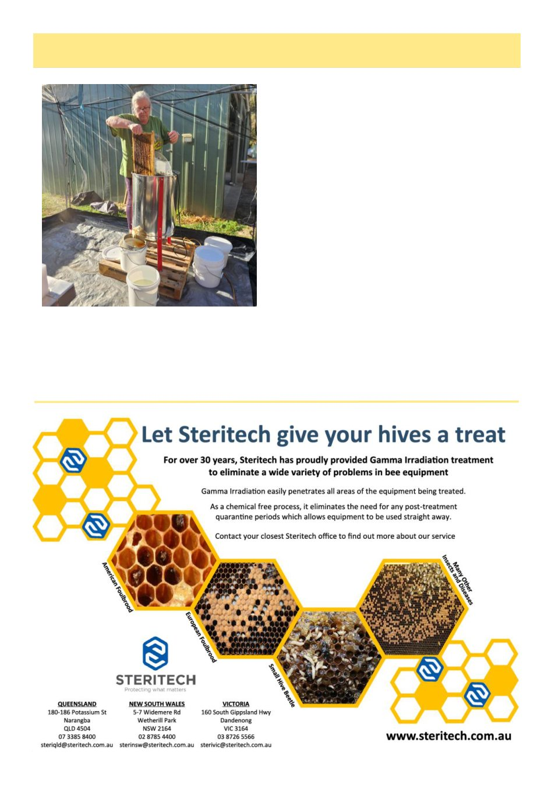

May 2026
9
Bendigo Branch Report, cont’d
The Branch has had some interesting presentations
during April notably by Sandy from the Native Plant
Group. Her presentation was both well presented and
accompanied by numerous photos and other media.
She held the attention of all the audience throughout
and fielded many questions both during and after the
presentation. Thanks Sandy and well done.
One of our members, Jo Griffiths, will be presenting
at Aspire Early Education and Kindergarten in White
Hills later in May. She will provide feedback next
month how her presentation to the young children went.
Our June information meeting will have Ag Vic prov-
ing us with an update and in July we will have our
Make and Mend. This weekend proved one of the most
popular on the calendar last year, giving the attendees
the opportunity to construct their own bee equipment
from boxes to frames to pollen patties and more. Tools
(air guns, table saw and multiple hand and power tools)
allowed attendees to construct flat packs and other
equipment at considerable discount and learn from
more advanced instructors.
The biggest activity on our calendar is the Bendigo
Field Day on the 11 October 2026. The field day is
conducted at the Harcourt Recreational Reserve. The
recent fires that decimated that area also impinged on
the area where the field day is conducted. The intent, if
feasible and practical, is to conduct the field day in this
location to show support for the community and en-
courage trade to help the Harcourt community to re-
cover. Please save the date to support the Harcourt
community.
In closing it is nearly time to put the bees to bed for
winter and concentrate on “make and mend” activities.
I hope that in reflection the “year that was” finishes
with a good honey crop and bees in a good condition
for over wintering before we start a new season.
Stafford Kelly
(Continued from page 8)
Extraction